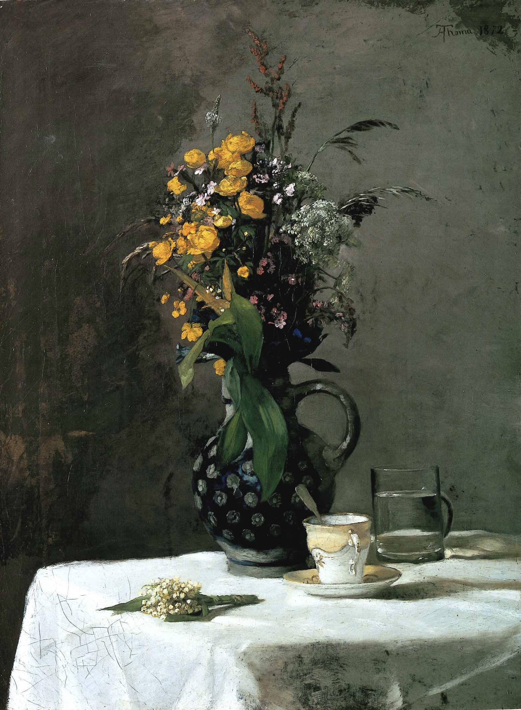

作品名 「野の花」
花言葉 「再び幸せが訪れる（幸せの再来）」「純粋」
スズラン
「幸福」
フランスでは5月1日は『スズランの日』で、愛する人にこの花を贈るのが習慣になっています。この日にスズランの花をプレゼントすると、受けとった人に幸福が訪れるといわれています。ヨーロッパでは古くから聖母マリアを象徴する花とされており、花言葉の「純粋」「純潔」はこれが由来です。「幸福」「再び幸せが訪れる」は、ヨーロッパの北国の人々にとって春の訪れの喜びのしるしになっていることに由来します。
野の花
ハンス・トマ
ハンス・トマは、20世紀に活躍した画家です。彼は主に抽象表現主義と形式主義の画家として知られており、彼の美術作品は多様な色彩や抽象的な形状を使用して構成されています。ここでは飾らない日常の食卓をテーマに選び写実的に描いている。彼は多くのグループ展覧会や個展に参加し、彼の作品は世界中の多くの美術館やプライベートコレクションに所蔵されています。
| 作品名 | 野の花 |
| 作者 | ハンス・トマ |
| 制作年 | 1872年 |
| 種類 | キャンバス・油彩 |
| 寸法 | 77cm × 55cm |
| 所蔵 | 旧国立美術館 (ベルリン) |